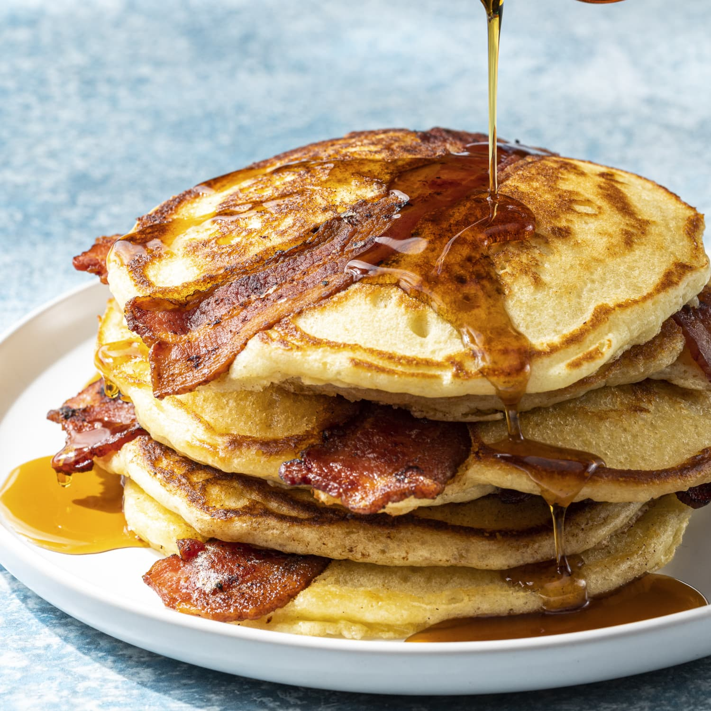

Bacon Pancaaaaakes!!!!

Description:
Makin' pancakes, makin' bacon pancakes, make some bacon and then put 'em in a pancake!
Sweet, savory, and delicious, a surefire and easy way to shake up Saturday breakfast!
Ingredients:
- Boxed pancake mix of choice (Kodiak Cakes are delicious!)
- 8 strips of cooked bacon
- Butter or oil
- Pure maple syrup (optional!)
Directions:
- Mix 1 cup of pancake mix according to box instructions
- In a skillet, cook bacon to desired crispness. Drain and pat dry.
- In a heated pan, add oil or butter and coat. Add 1/4 cup pancake mix.
- Wait about 30 seconds, until batter has slightly cooked, and add two strips of bacon across top of pancake.
- Allow pancake to cook until bubbles rise through the top, and carefully flip, bacon side down.
- Let pancake cook an additional 2 minutes, and remove from heat. Bacon should now be deliciously sealed inside the pancake!
- Serve with butter and syrup. Enjoy!